SMILES-Mapper is a web-app, made to visualize how molecular formats are constructed, such as SMILES
and InChi strings, together with chemical table files formats like .mol and .sdf
SMILES-Mapper is created, largely as a way for me to learn RDKitJS, although hopefully, it will be useful for either teaching purposes or for debugging SMILES strings.
Note this is a beta version and bugs and issues may therefore occur, please contact me at smiles-mapper@kyll.dk if you find any.
To use, enter a SMILES string in the input field and press the "Show" button.
A molecular structure should appear, if not, the SMILES may contain errors.
The molecular structure is colored by structure type and provided with an index for each atom. At the bottom, SMILES
and SMILES can be seen, with atoms colored the same as the structure, above each letter in the string,
the index of the associated atom in the molecular structure is shown. Hovering over letters associated with an atom will also highlight it in the structure.
Note that the SMILES input will not be altered, and shown as is.
In a similar fashion V2000 and V3000 mol-blocks can be found in the sidebar, with the same coloring and atomic index next to each line associated with an atom, and hovering over a line will highlight the associated atom.
If you find any issues or bugs, please let me know at smiles-mapper@kyll.dk. Refreshing the page may solve it.
This SMILES-Mapper and its logo was created by Victor Kyllesbech, you can find me at Kyll.dk, where you can also see some of my other projects, such as Mendeleej.com, a free, online and interactive periodic table, or Kylles Mol-Inspector, a free utility to inspect SDF files. Feel free to contact me at v@kyll.dk
SMILES-Mapper is open source, and the code can be found on GitHub github.com/KylleV/SMILES-Mapper. The code is released under the MIT License.
The only difference between kekulized and aromatic mol-blocks is how aromatic structures are handled. Aromatic bonds in aromatic mol-blocks are assigned an aromatic bond-type, while in kekulized mol-blocks, the aromatic bonds are assigned as alternating single and double bonds, as illustrated below.
There are quite a few projects similar to this, allowing the inspection and debugging of chemical file formats, which you may find useful.
SMARTS.plus 1 is a web service developed by AMD group at the Universität Hamburg. SMARTS.plus allows easy visualization of the, otherwise difficult-to-understand, SMARTS and SMIRKS strings used for reactions and, for (sub)structure searches. The group also has a large number of other useful applications, many free for academic use.
Kylles Mol Inspector is a small, free, utility application developed by myself for a quick inspection of MOL and SDF files, allowing easy visualization of atomic and bond properties.
Hack-A-Mol is a web-appplication developed by Bob Hanson, which allows you to draw a molecular structure and see how it looks in different file-formats, but also allows the editing of these files and see how it changes the molecular structure.
There are some known mistakes, and some possible ones, which might be worth noting.